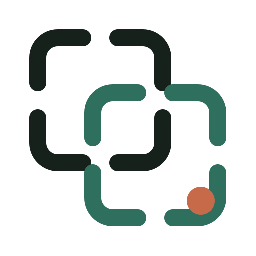
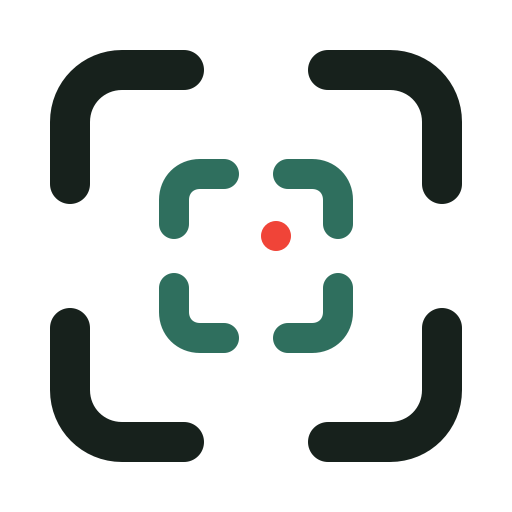
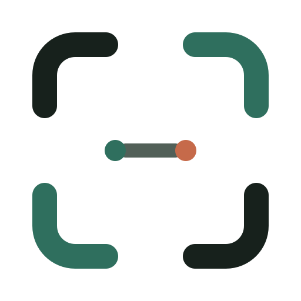

Вместо обычных квадратов — углы настоящего видоискателя. Сохраняем повторение, но сильнее связываем знак с фотографией.

Два видоискателя: сделал кадр, повторил, увидел иначе.

Более спокойный знак: большой кадр и найденная внутри деталь.

Один видоискатель и короткое движение между двумя решениями.